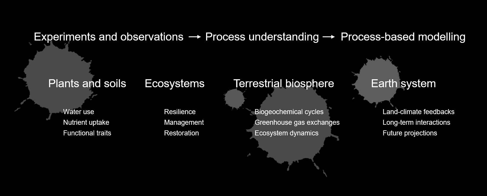
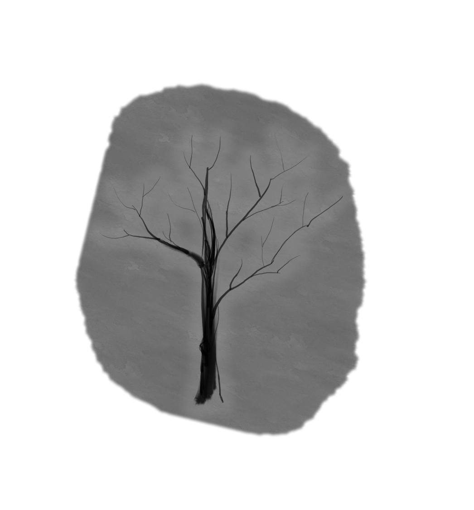
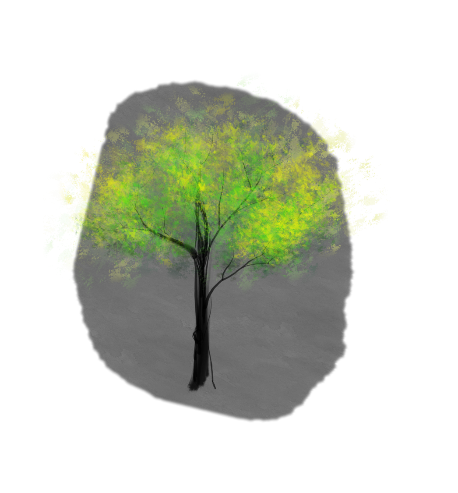
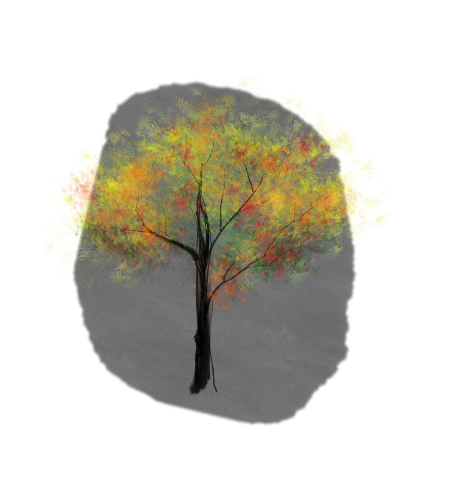

Climate Variability and Ecosystem Responses
How drought and environmental stress affect ecosystem functioning, resilience, and carbon cycling.
RESEARCH
From daily to centennial timescales, from leaves and ecosystems to global Earth system, I investigate how climate variability and human activities shape terrestrial ecosystems and biogeochemical cycles, combining experiments, observations, and process-based modelling.

View publicationsRESEARCH DIRECTIONS
How drought and environmental stress affect ecosystem functioning, resilience, and carbon cycling.
How management, drainage, and restoration reshape terrestrial carbon, water, and greenhouse-gas cycling.
How ecosystem processes and biogeochemical cycles can be better represented from regional landscapes to the global Earth system.

CLIMATE VARIABILITY
I investigate how climate variability and drought affect ecosystems, from plant water use and functional traits to large-scale terrestrial carbon cycling.

LAND MANAGEMENT
I study how human land use, ecosystem modification, and restoration reshape water, carbon, and greenhouse gas exchanges across landscapes, including Swiss peatland carbon dynamics and opportunities for restoration.

MODELLING
I develop and apply process-based models to investigate interactions among carbon, nitrogen, and greenhouse gas dynamics and to connect ecosystem processes from regional to global scales and from seasonal to centennial timescales.
My current collaborations extend this modelling perspective to emerging anthropogenic impacts, including co-supervising PhD research on how microplastics affect marine particle transport and biogeochemical cycling.
RESEARCH COMMUNICATION
Nature research featured by uniAKTUELL: Stickstoffemissionen beeinflussen den Klimawandel (Nitrogen emissions affect climate change).
Read articlePresenting findings from the project Resilience of Organic and Conventional Production Systems to Drought (RELOAD).
Watch videoRELOAD project featured in the ETH Globe Smart Food issue.
Read featureLOOKING FORWARD
I am interested in improving the representation of terrestrial heterogeneity in process-based models by integrating experiments, observations, and emerging Earth observation products. My goal is to better understand how ecosystem processes shape land-climate interactions and inform climate adaptation, mitigation, and sustainable land management.